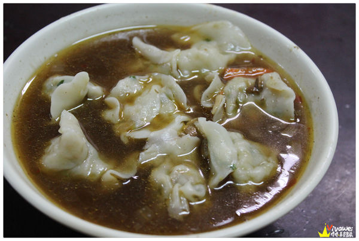

「上上小吃」店家資訊
地址：苗栗縣公館鄉近光路37號
電話：037-225586
營業時間：11:00-13:30、16:30-20:00（每周四公休）
▲上次在我寫了一篇不是很推薦的「河北餃子館」後，很多人都跟我大力推薦這間「上上小吃」，
這間「上上小吃」在苗栗公館地區可以說是名店的等級，到了用餐時間都會出現滿滿人潮！
▲我們趕在店家打烊之前來用餐，這時店內不需要排隊就有座位可以入座。
▲店內的透明櫥窗內有小菜可以點，不過沒有標示價格，但價格都還算是合理。

▲店內的冰櫃有一些飲品，在用餐後再結帳算錢就可以了。
▲有餐具區可以自取，想要分食的人就來這邊拿小碗，另外還有提供兒童用的餐具呢！

▲以上是店家的價目表，價格就跟一般小吃店的價格差不多。
▲桌上擺放著辣椒、醬油、白醋和香油可以自取。

▲小菜的部分加了一些蔥花，豆干20元、海帶25元。
＃鵝肉：175元。
▲鵝肉本身的價格就不便宜，以這樣一盤175元來說還算合理，而且分量還算蠻多的！
可以直接吃原味，或是沾著一旁的醬料，還有薑絲，肉質吃起來還算OK。
＃酸辣湯：６０元。
▲酸辣湯我們點的是中碗的，如果還有點其他的湯，三個人來吃其實點小碗的就好可以，
裡面的配料蠻多的，有豆腐、雞蛋、紅蘿蔔等等，
不過桌上沒有烏醋可以加，有點可惜！
＃水餃：一顆5元／此為20顆100元。

▲這邊的水餃一顆是五塊錢，就只有一款固定的韭菜口味，似乎沒有其他的口味可以選擇。
▲水餃不算大顆，個人覺得普普通通，不過有不少人說在公館能吃到這樣的水餃已經很不錯了！
＃牛肉湯餃：10顆60元。

▲如果想要喝湯又想要吃水餃，就可以點湯餃來吃，這樣就可以一次滿足！
▲覺得有加入牛肉湯的餃子比較有味道，而且牛肉湯喝起來不會太油膩，還算不錯。
＃大滷麵：60元。
▲大滷麵的份量蠻多的，裡面有加入豆腐，雞蛋和青菜等等配料，不過個人沒有特別喜歡這樣的大滷麵。
▲到最後我們點了這些沒有吃完，不過最後沒有打包帶回家，覺得打包回家可能也沒有想要再吃的動力。
▲整體來說，這間「上上小吃」在公館地區是很多在地人的愛店，用餐時間總是滿滿人潮，
餐點的份量夠多，價錢上也算是合理，如果想要找水餃／麵類或是有小菜的店，是可以考慮看看！
不過個人覺得這天每一道餐點都屬中規中矩的口味...沒有到特別驚豔的美味就是了。
引用文章:瑋瑋＊美食萬歲